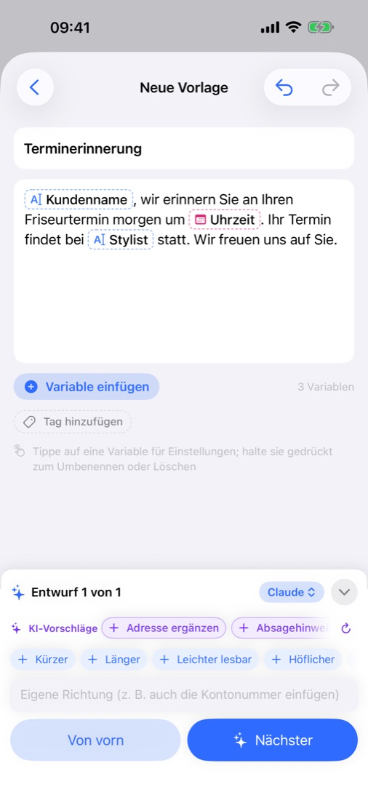
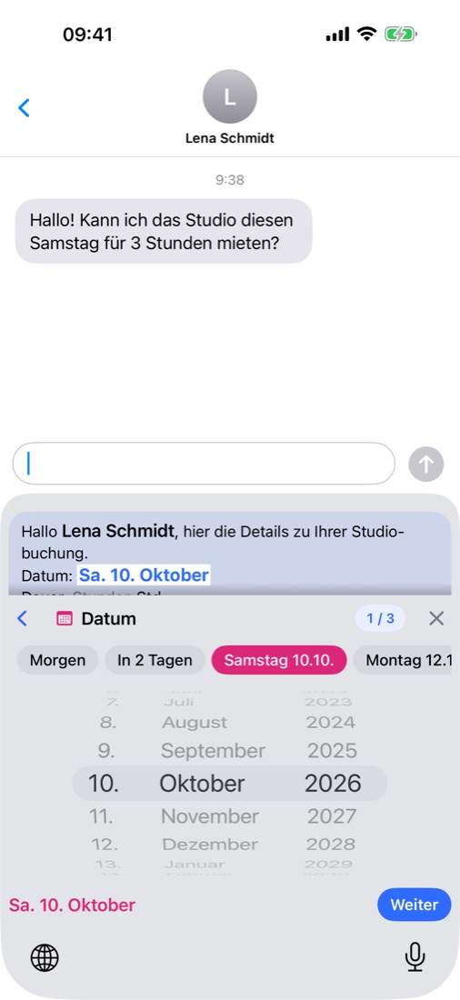
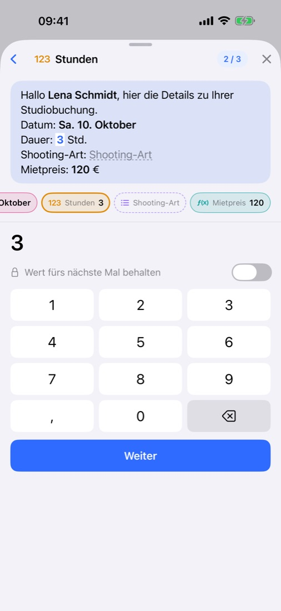
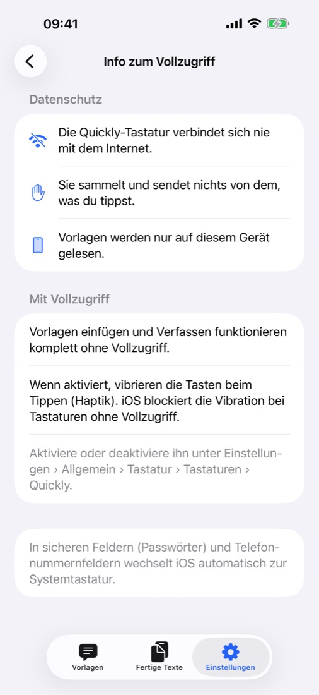

Den Text schreibt die KI.
Du füllst nur aus, was sich ändert.
Eine Zeile genügt: Die KI schreibt den Text und lässt Stellen frei, die sich jedes Mal ändern – Name, Datum, Betrag. Beim Senden füllst du in jeder App nur diese Stellen in der Quickly-Tastatur aus.
Bald im App StoreKostenlos · Keine Werbung · Ab iOS 18 · iPhone · iPad

Schreiben, ausfüllen, senden.



Alles drin, was du brauchst.
Beschreib die Situation in einer Zeile oder füg einen Text ein, den du schon verschickst – zurück kommt er mit den wechselnden Stellen als Variablen. Mit „Kürzer“ oder „Höflicher“ feilst du nach.
Apple Intelligence auf dem Gerät und kostenlos, deine ChatGPT-, Claude- oder Gemini-App oder dein eigener API-Schlüssel. Oder ganz ohne KI selbst schreiben.
In Nachrichten, Mail oder jedem Messenger eine Vorlage wählen und die Werte ausfüllen. Und ganz normal tippen – in 11 Sprachen.
Morgen oder diesen Samstag mit einem Tipp, Beträge mit Währungszeichen von selbst und Formeln, die die Summe ausrechnen.
Jeder ausgefüllte Text landet unter „Fertige Texte“ und lässt sich wiederverwenden. Mit Tags ordnen, nach Titel und Inhalt suchen.
Vorlagen, Tags und fertige Texte bleiben auf Geräten mit demselben iCloud-Account synchron. Backupdatei jederzeit exportieren. Heller und dunkler Modus.
Sie werden nur auf deinem Gerät und in deiner eigenen iCloud gespeichert – nicht einmal der Entwickler kann sie sehen. Keine Registrierung, keine Werbung, kein Tracking, und die Tastatur geht nie online – Datenschutz